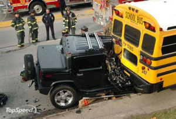

Andreu Buenafuente
 De: La Frikipedia, la enciclopedia extremadamente seria.
De: La Frikipedia, la enciclopedia extremadamente seria.
De la serie grandes personajes:
Andreu leyendo este artículo
| Nacimiento
|
30 a.c
|
| Muerte
|
es inmortal.
|
| Ocupación
|
Sex simbol, humorista a ratos
|
| Nacionalidad
|
español
|
| Malo o bueno
|
óptimo
|
| Atentados contra la humanidad
|
enviar al chikilicuatre a representar a Espiña (sigh)
|
| Religión
|
Chucknorrista (evidentemente, trabaja en la Sexta)
|
| Notas
|
Se pasa el día en twitter
|
Andreu Buenafuente es un individuo que se dedica a hacer reír al poco público que ve su programa (lo hacen tan tarde que solo lo ven drogadictos, borrachos y niños a escondidas). Ha emitido su programa en numerosas cadenas de televisión (Arteria 3, la catalana, la secta y Disney channel), ya que suelen echarlo a patadas antes de que llegue al programa número 20.
Características del amigo Andreu
Es un individuo pseudo-gracioso que sale por la Hummer, pero no hay pruebas, y además ha sido desmentido por el propio Andreu, o cual, si nos basamos en el método deductivo de la revista del corazón media, lo confirma rotundamente; tiene un Hummer.
Problemas
Por supuesto, no todo iba a ser un lecho de Hummers para Andreu, y a diario se enfrenta a gran cantidad de problemas; a saber:
- En ocasiones, un individuo llamado Follonero (Follo, para acortar) le interrumpe y le critica. Sobre dicho individuo se cree que es un guionista del programa, por lo que el muy gilipollas critica su propio trabajo. Lo malo es que ahora solo se pasa para autopromocionarse, lo cual da rabia.
- Sufre de una enfermedad rara llamada cabezonitis selectiva, que hace que a algunas personas les parezca que tiene la cabeza grande. No se descarta que sea un primer paso hacia una explosión craneoencefálica de la hostia.
- Tiene una terrible adicción al twitter (los que le siguen saben que comenta cada dos minutos y medio)
- Corbacho le ponía una cinta todos los días cuando estaba en arteria 3 para que adivinase al invitado. Ambos afirman que Andreu no sabe quién es, cosa que el público del programa duda seriamente (no es mi caso, sé que lo conoce de antemano porque me hicieron la entrevista a mí y quedamos el día anterior en su casa. Por cierto, qué mal cocina el jodío)
- En el fondo sabe que Cataluña es España.
Lista de colaboradores que ha tenido
El follonero: En realidad es él quien dirige todo el cotarro. Buenafuente en sí es solo un personaje pre-
neng.
Algunos de sus colaboradores han sido (o son):
- El Neng de Castefa (baila y grita mucho; el pasado marzo entró en drogatas anónimos)
- Míguel Chiclé (más adelante Javi Güiliams)
- El gilipollas (es gilipollas)*El notario (se rie sin reirse)*La niña de Shrek (ha vuelto)
- Ignacio Zuloaga (vasco de los de la boina hasta las orejas)
- Concepción Angulo (de esta no me acuerdo)
- Raúl Cimas (iba al programa a beber cerveza)
- Fraga (Ta mu mayor)
- Los astronautas (habia uno que no veía pelis)
- El Rey en persona (mas campechano el tío...)
- Las Hermanas Carmona (de estas tampoco me acuerdo)
- Eufemio (bebía zumo)
- Milagros (tristemente desaparecido, el perro feo)
- Wisky (perro que vivía bajo la mesa)
- Julián (Una cabeza de ciervo zombi)
Foto de archivo del Wisky, el perro de debajo de la mesa de Andreu
- El hombre invisible (tu no lo viste, pero estaba)
- Palomino (el de las orejas de plástico mal puestas)
- El Follonero (follo para los amigos)
- Berto (premio al enchufado del año 2009)
- Iñigo (amigo que saca el perro de Berto)
- Rodolfo Chikilicuatre, (con su "baile" chiquichiqui)
- Santi Clima (actor impedido por actuar mal)
- Ana Morgade
- Corbacho (llevaba cada día un traje, a cual más sobrio y profesional)
- Santi Millán (se pasó un par de veces)
- Etcétera etcétera (que sigue, no es un colaborador, coño)
Leyendas urbanas
Hay muchas leyendas acerca de este individuo, he aquí algunas de ellas (estan 99% confirmadas)
 Es cierto que Buenafuente no tiene un Hummer porque el que tenía lo averió la semana pasada, y hasta que no se compre otro...
- Andreu Buenafuente tiene 7 hummers , cada uno de un color del arcoiris y dia de la semana.
- Andreu Buenafuente va al cuarto de baño en pony (no especificaremos que sucede dentro de el).
- Andreu Buenafuente es el más rico del universo , pero no quiere que se sepa.
- Andreu Buenafuente en realidad, no es
humano blanco; es negro.
- BFN, en realidad, es un programa satánico y nos transmiten mensajes demoníacos a través de ondas especiales.
- Andreu Buenafuente come placentas humanas para conservar su juventud , pero consigue el efecto contrario.
- Andreu Buenafuente mantiene una rivalidad con el `Gran Wyoming, personaje menos gracioso que el.
- Andreu Buenafuente hizo reir a Diox y este le concedió la inmortalidad.
- Berto no es una persona, si no una nariz parlante con un señor pegado detrás.
- Andreu Buenafuente murió hace años; el que sale por la tele es en realidad un monigote de plastilina con su cara que va a pilas.
Conclusión
hermano secreto de Flipy que sale en el pograma de Andreu
En realidad Andreu Buenafuente no tiene puñetera gracia. La gente se ríe porque muy astutamente consigue que junto a las ondas hertzianas normales se emita otra radiación llamada ondas hilarantes que provocan risa involuntaria en el público. Estas ondas, descubiertas en Inglaterra por el Dr. Joke Laugh, llevaban siendo experimentadas por el tal Buenafuente en Cataluña desde hace años, lo que le ha granjeado una injustificada fama de humorista. Se cree que Andreu lleva el aparatito escondido en el vientre, y por eso resulta aparentemente gracioso incluso en las entrevistas escritas.
En realidad el que es gracioso pero gracioso de verdad es Pepe Navarro, pero se cree que el equipo de Buenafuente y sus secuaces consiguen acompañar las ondas de TVE con códigos secretos antihilarantes, para que nadie se ría y conseguir así toda la audiencia.
Es fácil demostrar que Andreu Buenafuente no es gracioso. Porque, vamos a ver, ¿qué tiene de gracioso meterse con la Iglesia Católica, el PP, el PSOE, Carod, Bush, Fraga...?
...bueno, ahora que lo pienso es lo mismo que hacemos en la Frikipedia... O__o

|
Actores
|

|
|
|
Autor(es):
- Krusher
- Jarlaxle
- Anxova
- Haakjvork
- Aque
- Khazike Khashondo
- Lopesiu
- Azulejos
- Many20
- Pazuzu u
Frikipedia 2005-2016, Licencia
GFDL 1.2 - Extraído por FrikiLeaks